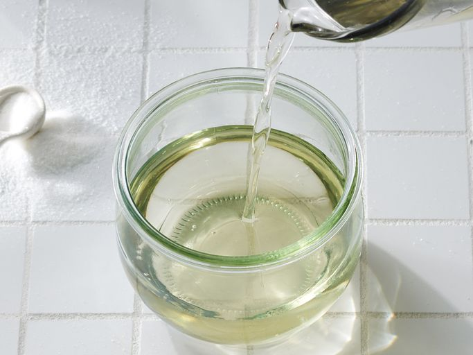

Simple Syrup Recipe

Description
Simple syrup is made by cooking equal parts sugar and water until the mixture is slightly thickened. It can be used as a sweetener in cooking and baking, but it's most commonly used as an ingredient in cocktails.
Ingredients
- White Sugar
- Water
Steps
- Combine the sugar and water in a saucepan and bring to a boil, stirring until the sugar has dissolved.
- Allow to cool and store in the fridge in a clean jar with a tight-fitting lid.
Home